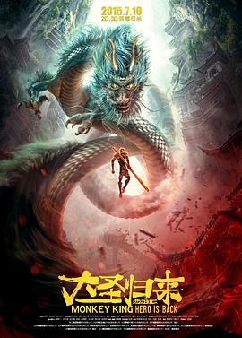

西游记之大圣归来
又名：大圣归来 / 猴王 / 西游记3D / Monkey King: Hero is Back / CUG: King of Heroes
宫崎骏风格乱入
作品信息
| 导演 | 田晓鹏 |
| 编剧 | 田晓鹏 / 刘虎 / 米粒 / 金冉 / 金成 |
| 主演 | 张磊 / 林子杰 / 吴文伦 / 童自荣 / 刘九榕 / 吴迪 / 刘北辰 / 赵乾景 / 周帅 |
| 类型 | 剧情 / 动画 / 奇幻 |
| 制片国家/地区 | 中国大陆 |
| 语言 | 汉语普通话 |
| 上映日期 | 2015-07-10(中国大陆) |
| 片长 | 89分钟 |
| IMDb | tt4644382 |
最后一次看到是 2026-08-12T21:12:30+08:00 · 豆瓣原页